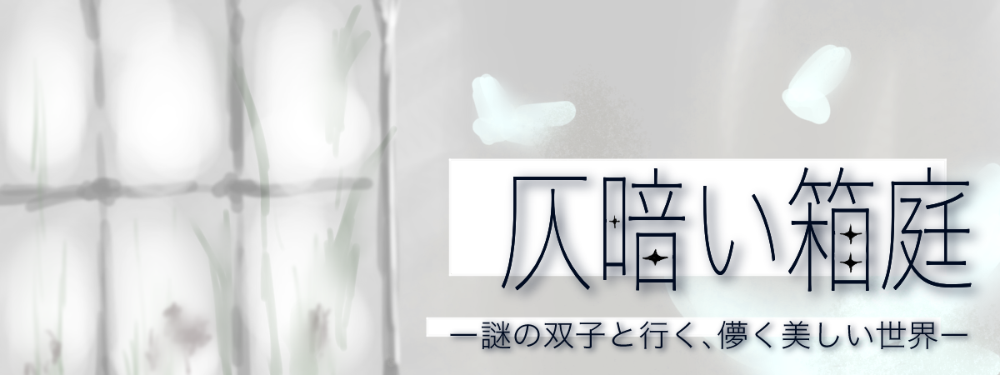

＜第五章 夢＞
「でも収穫ってどういうことだろう...」 おめでとう。キミは無事二人と脱出することができたようだね。 ＜真相＞ [箱庭について]
部屋の隅の木に何か実ってるよ。』
見るとそこには赤く小さな実を実らせた低木があった。
「それは…サンザシの実だ。」
亡くなった祖母の庭にも、サンザシの木が生えていて、よくおやつに実をかじっていたっけ。
『これにも花言葉はあるの？』
「…花言葉は希望。棘があるから気をつけてね。」
ノアが実を取ると、噴水の方からカチッと音がして、水は抜けていった。
『あっ』
すると、今までミアの指先にとまっていた小鳥が、ノアの方へと飛んでいき、さっき取った木の実をつつき始めた。
木の実を食べた小鳥はしばらくしないうちに苦しみだして、冷たく、動かなくなった。
『え…どうして…。』『さっきの水が毒なら、この木に実っている木の実もその毒を吸っていたんじゃないかな。』
『そんな…。』
「…とりあえず、埋めてあげようか？」
『うん…。』
ミアは鳥を木の根元に埋めた。とても悲しそうな顔をしていた。
「…さあ、これで鍵が三つ揃ったから、小箱を開けられるはず。開けに行こう？」
『そうだね。』『うん。』
二人がそう言ってこちらを向いた瞬間もまた、違和感を感じた。
驚くほどの切り替えの速さ。ニコニコとこちらを見ているミアの笑顔は、先程の悲しそうな顔とは似ても似つかなくて、あまりに不自然だった。
最初の部屋に戻ってくると、先程まではなかった鉄の扉がそこにあった。
「こんな扉なかったよね…？」
『小箱を開けよう。』『小箱を開けよう。』
二人にはこちらの話が聞こえていないみたいだ。それどころか、とても嬉しそうに小箱の周りをクルクルと回っていた。
「そんな喜ぶ…？」
拭いきれない違和感を感じながらも、三つの鍵を鍵穴に挿し、小箱を開けた。
中から出てきたのは先程の鍵よりも一回り大きな鍵だった。
『鉄の扉、開けれるよ。』『さがしもの、見つかるよ。』
「？」
さっきから二人が言っていることが全く理解できない。
さがしもの？一体何のことなんだろう。
困惑している私を置いて二人は扉に鍵を挿した。
『お師匠様が待ってる。』『今回も褒めてもらえるかな。』
「二人ともさっきから何言って…」
話しかける間も無く、開かれた扉から眩しい光が溢れ出てきた。
どこまでも白く、何もない空間。天井も壁も床もわからない。
ただそこには双子と、背の高い綺麗な男性が一人、立っていた。
『キミが今回の迷い人だね？』
「え、ええ…？」
『キミの大切な思い出は見つかったかな。』
微笑む男性。長くてサラサラとした髪の毛は薄灰色で、今にも白にかき消されてしまいそうな儚さを感じた。
「大切な思い出…」
真っ黒な瞳が私を捉える。
『質問を変えよう。この箱庭にあった花や小鳥、それはどこかで見たものじゃなかったかい？』
思い返してみるとあれらは全て、私の祖母の家にあったものたちだった。
『…心当たりがあるようだね。さて、急がなくちゃいけない。
キミは変化のない、地味な生活に飽き飽きしていた。そうじゃないかい？』
急に声が近くなってくる。音量はあげていない。立体音響だろうか？
うまく説明はできないが、まるで本当にそこにいて実際に話しかけられているかのように聞こえるのだ。
急に不気味さが増す。
誰にも言ったことのないそんなこと、なぜゲームのキャラクターが……
「な、何なんですか…」
『変化を求めるなら、Code.Fierte#_000000と入力してご覧？さあ、あなた次第、だ。』
背筋がゾクゾクとして本性が警鐘を鳴らす。
耳を傾けてはいけない、と。
慌ててPCをシャットダウンさせると、ふと耳元で声がした。
振り向けない。
振り向いてはいけない。
『ごめんね、怖がらせてしまったかな？残念ではあるけど…大切な思い出、夢を失っていなかったキミを無理矢理連れて行くつもりはないんだ。それでは、私達は次に行くよ。Bonne soirée.』
背後から気配が消えた途端、猛烈な眠気に誘われて瞼を閉じた。
「おばあちゃん…私、大きくなったらお花屋さんになりたいな。」
目を覚ました。
ずいぶん長く眠っていたようで、体全体が心地良く痺れている。
何か夢を見ていたような…
目覚まし時計の方に目を向けると時刻は午前10時17分。
「って会社？！？！？？！」
急いで遅刻と謝罪ののメールを送ろうとメールを開くと、
［全社臨時休業のお知らせ］
「え…やったああああ！！！」
寝起きとは思えないような声で歓喜した。
「何しよう！！！テンションやべえ！！！」
舞い上がっていると、本棚から写真と押し花が落ちてきた。
「これは…おばあちゃんと…私…」
その写真を見た途端、何だか懐かしくなって部屋で一人口元を緩めた。
「…フラワーアレンジメントの資格…取るかあ…。」
『またダメだったね。』『うん。連れてこれなかった。』
『ノア、ミア、いいんだよ。私は人間の観察ができるだけで楽しいからね。
さあ、次の迷い人を探しに行こう。』
全ステージ クリア！
...結局双子と私の正体がわからない？真相を知りたい？
ふむ...キミが期待していた結末が待っているかは知らないが、どうしても気になるならこれを見てみるといい。
[背の高い男性、双子のノアとミアの正体について]
~背の高い男性~
とある別次元で教授をしている魔法使い。
名前は『メルヴェイユ・アンデリシャス』。
興味があることに対してはのめり込んで周りが見えなくなってしまう癖がある。何やら別次元で『総統』とやらから、人を連れてくるように頼まれているらしい。
~ノアとミア~
魔法使いメルヴェイユの弟子。
今は導き人として、その人物が連れてくるのにふさわしい人物かどうかを見極めているらしい。
箱庭はキミ自身の深層心理や、大切な記憶の奥深くに存在しているものからランダムで生成される生成される箱のようなもの。
今回のプレイヤーの場合、亡くなった祖母と、祖母が生きていた頃の大好きだった庭の要素が色濃く出ていた。
Thank you for playing.
Special Thanks
リアル脱出ゲームとは
2004年に発表されたネットで爆発的に盛り上がった「脱出ゲーム」を、そのフォーマットそのままに現実世界に移し替えた大胆な遊びが「リアル脱出ゲーム」。マンションの1室や廃校、廃病院、そして東京ドームや六本木ヒルズなど、様々な場所で開催され、2007年に初開催して以降、現在までで累計820万人以上を動員。日本のみならず上海、台湾、シンガポールやサンフランシスコなど全世界で参加者を興奮の渦に巻き込み、男女問わずあらゆる世代を取り込む、今大注目の体験型エンターテインメント。
このゲームの企画者
企画・制作メンバーの紹介など。
テキストテキストテキストテキストテキストテキストテキスト
テキストテキストテキストテキストテキストテキストテキストテキストテキストテキストテキストテキストテキストテキストテキストテキストテキストテキストテキストテキストテキストテキストテキストテキストテキストテキストテキストテキストテキストテキストテキスト